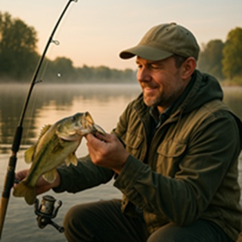

Carp (Cyprinus carpio)
The world record for the biggest carp ever caught is held by British angler Colin Smith. In 2016, he caught a massive common carp weighing 105lb 13oz (48.05 kg) at Euro Aqua, a fishing lake in Hungary — something I’m proud of as a Hungarian.
Carp are freshwater fish commonly found in lakes, rivers, and slow-moving waters. They are widespread across Europe and are popular among anglers.
Carp are omnivorous and feed on plants, insects, larvae, and small crustaceans. Their diverse diet makes them adaptable to different environments.
Common carp baits include boilies, sweetcorn, pellets, and bread. The choice of bait often depends on the season and water temperature.